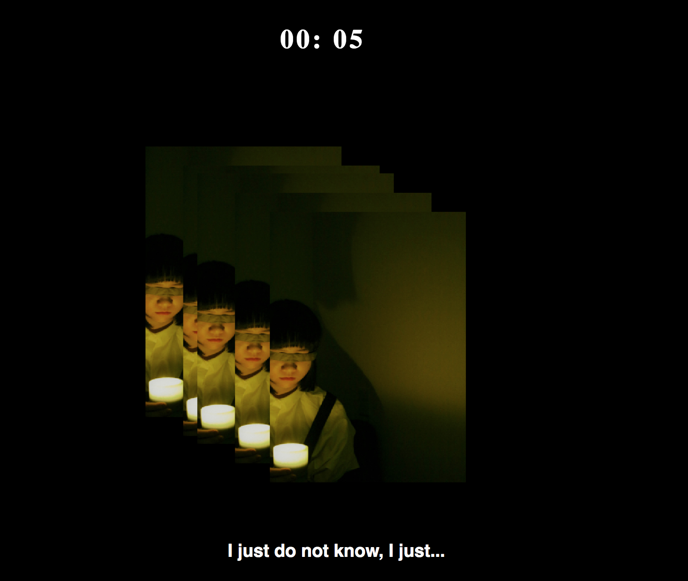
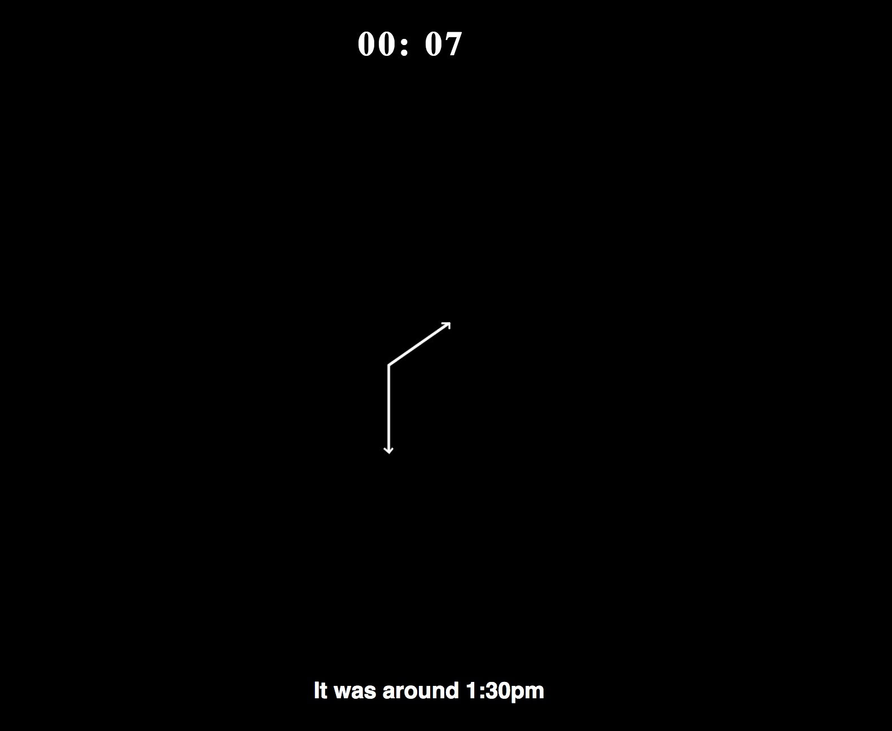
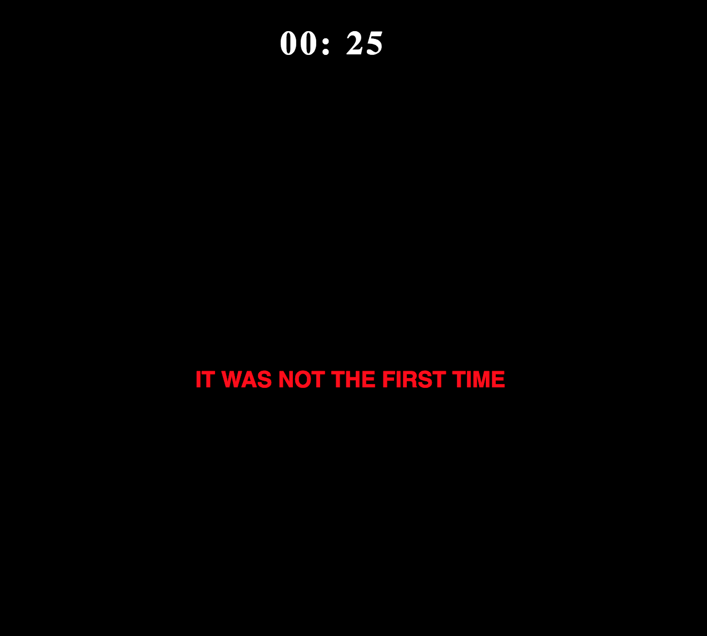
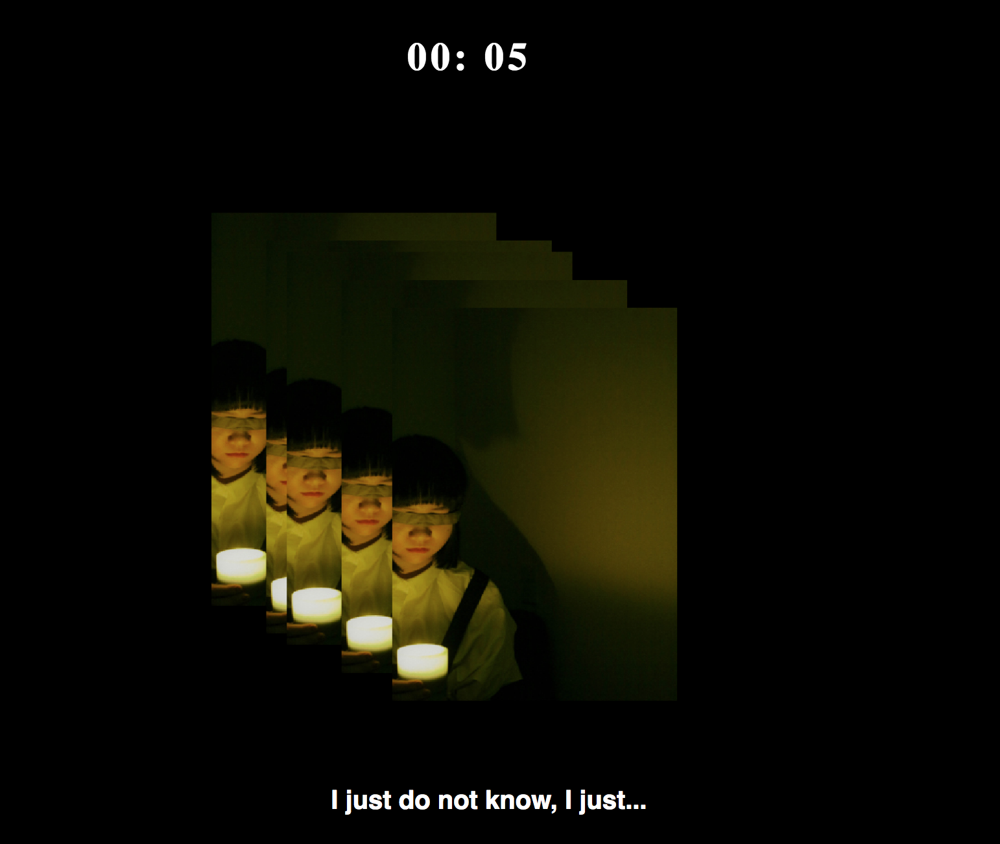
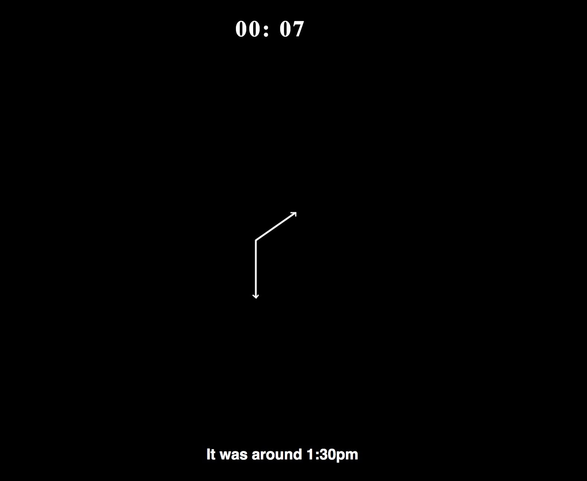
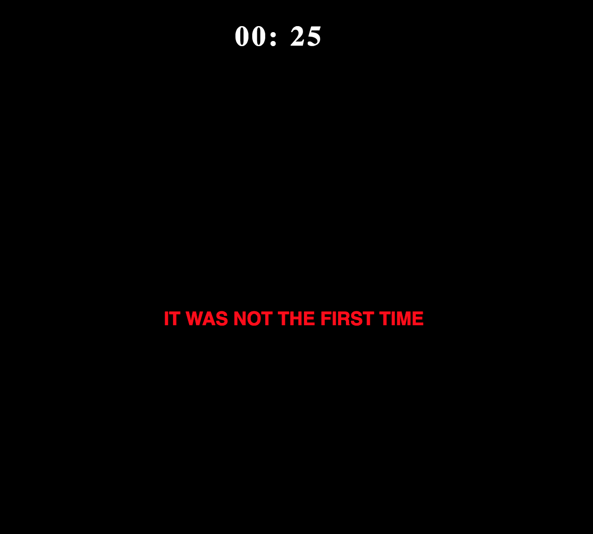

Remake Website
view websiteFor this project, we were required to make a website based on a book or other media, I chose a photography book that tells about a story that a woman is being killed after being treated a long time domestic violence by her husband. It was combined with part of her memories and police records, and was depicted by two diffrent perspectives.

 




